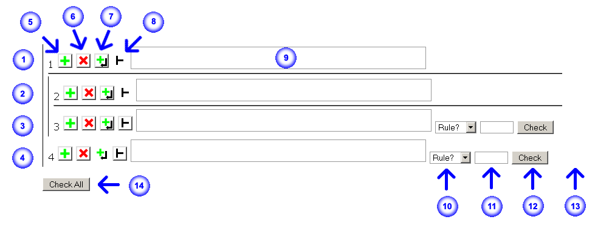

Help for System B
Basics
The image above is an example of a blank proof in Firefox. It may look somewhat different in other browsers.
- 1. This is an assumption step in the main (top-level) proof. There can be many of these. This cannot contain sub-proofs.
- 2. This is an assumption step in a sub-proof. There can only be one per sub-proof. This cannot contain sub-proofs.
- 3. This is a statement step in a sub-proof.
- 4. This is a statement step in the main proof.
- 5. The "Add Step" button. See below.
- 6. The "Remove Step" button. See below.
- 7. The "Add Step After" button. See below.
- 8. The "Sub-proof" button (disabled for an assumption in the main proof). See below.
- 9. A statement text box for logical sentences. If a sentence takes up more than the visible area, a small scroll bar will appear on the right side of this text box. See "Operators/Connectives" below for details on valid operator symbols and shortcuts.
- 10. A drop-down menu box for rules. A rule can be specified using the mouse or, in most browsers, by typing the first few letters of the rule's name when this box is focused/selected.
- 11. A text box for citing step numbers. Step numbers should be separated by commas. They can be entered in any order.
- 12. A check button for validating the inference or equivalence in this step. This does not check recursive dependencies. These step numbers will be updated when steps are added or removed.
- 13. Check status area. Results from checking rule applications such as "Valid" or "Invalid" will be displayed here.
- 14. Checks all steps by essentially performing a normal check on each step. This does not check recursive dependencies.
Adding and Removing Steps
 Adds a step after the specified step. If the specified step is an assumption in the main proof, an assumption will be added. Otherwise, a normal statement step will be added. Similar to Fitch's "Add Step After" and "Add Premise."
Adds a step after the specified step. If the specified step is an assumption in the main proof, an assumption will be added. Otherwise, a normal statement step will be added. Similar to Fitch's "Add Step After" and "Add Premise."
 Removes the specified step or, if the step is a sub-proof's assumption, remove the step's sub-proof. If the specified step is the only assumption or the only statement in the main proof or a sub-proof, it is reset but not removed. Equivalent to Fitch's "Delete Step."
Removes the specified step or, if the step is a sub-proof's assumption, remove the step's sub-proof. If the specified step is the only assumption or the only statement in the main proof or a sub-proof, it is reset but not removed. Equivalent to Fitch's "Delete Step."
 Adds a step after the specified step's containing sub-proof. For assumptions in the main proof, this instead adds a statement step after those assumptions (i.e. before the first statement). This button is disabled for statements in the main proof. Similar to Fitch's "End Subproof."
Adds a step after the specified step's containing sub-proof. For assumptions in the main proof, this instead adds a statement step after those assumptions (i.e. before the first statement). This button is disabled for statements in the main proof. Similar to Fitch's "End Subproof."
 Adds a sub-proof after the specified step. If the specified step is an empty statement, it will instead be replaced with a new sub-proof. This button is disabled for assumptions. Equivalent to Fitch's "New Subproof."
Adds a sub-proof after the specified step. If the specified step is an empty statement, it will instead be replaced with a new sub-proof. This button is disabled for assumptions. Equivalent to Fitch's "New Subproof."
Logical Statements
Statements entered into the statement text box should be propositional logic sentences. Operators are listed below. Atomic propositions are strings of consecutive letters. They are case-sensitive but any case is allowed.
Spaces are mostly ignored. Spaces are only significant when they separate two atomic propositions, which is a parse error.
Generalized conjunctions and disjunctions are allowed.
Justification Step Numbers
For a statement, cite its corresponding step number.
For a sub-proof, cite its assumption's step number.
Operators/Connectives
| Operator | Symbol | Shortcut |
|---|---|---|
| Negation | ~ | ! |
| Conjunction | /\ | & |
| Disjunction | \/ | | |
| Implication | -> | $ |
| Biconditional | <-> | % |
Shortcut characters are automatically replaced with corresponding symbols.
Note: Shortcuts may not work correctly in IE.
Rules
Inference:- Reiteration (Reit):
- {φ} |- φ
- Modus Ponens (MP):
- {φ → ψ, φ} |- ψ
- Generalized Simplification (Simp):
- {φ1 ∧ … ∧ φn} |- φi
- Conjunction (Conj):
- {φ, ψ} |- φ ∧ ψ
- Generalized Addition (Add):
- {φi} |- φ1 ∨ … ∨ φi ∨ … ∨ φn
- Double Negation (DN):
- φ ⇔ ¬¬φ
- Idempotence (Idem):
- φ ⇔ φ ∧ φ
- φ ⇔ φ ∨ φ
- Commutation (Com):
- φ ∧ ψ ⇔ ψ ∧ φ
- φ ∨ ψ ⇔ ψ ∨ φ
- Association (Assoc):
- φ ∧ (ψ ∧ χ) ⇔ (φ ∧ ψ) ∧ χ
- φ ∨ (ψ ∨ χ) ⇔ (φ ∨ ψ) ∨ χ
- Distribution (Dist):
- φ ∧ (ψ ∨ χ) ⇔ (φ ∧ ψ) ∨ (φ ∧ χ)
- φ ∨ (ψ ∧ χ) ⇔ (φ ∨ ψ) ∧ (φ ∨ χ)
- DeMorgan (DeM):
- ¬(φ ∧ ψ) ⇔ ¬φ ∨ ¬ψ
- ¬(φ ∨ ψ) ⇔ ¬φ ∧ ¬ψ
- Transposition (Trans):
- φ → ψ ⇔ ¬ψ → ¬φ
- Exportation (Exp):
- φ → (ψ → χ) ⇔ (φ ∧ ψ) → χ
- Implication (Impl):
- φ → ψ ⇔ ¬φ ∨ ψ
- ¬(φ → ψ) ⇔ φ ∧ ¬ψ
- Equivalence (Equiv):
- φ ↔ ψ ⇔ (φ → ψ) ∧ (ψ → φ)
- φ ↔ ψ ⇔ (φ ∧ ψ) ∨ (¬ψ ∧ ¬φ)
- Conditional Proof (CP):
- {φ |- ψ} |- φ → ψ
Checking Statements
Checking requires valid justification step numbers and a rule.
Equivalence rules can be applied more than once in one step, but only if the applications are not nested.
Equivalence rules can only be applied to whole substatements. For example, commutation on P∧P∧Q resulting in P∧Q∧P will be rejected because P∧Q is not a whole substatement in P∧P∧Q. However, commutation on P∧(P∧Q) resulting in P∧(Q∧P) will be accepted.
Statement variables (e.g. φ) in most inference and equivalence rules can only match whole substatements. For example, commutation on P∧Q∧R resulting in Q∧R∧P will be rejected because Q∧R is not a whole substatement in P∧Q∧R. However, commutation on P∧(Q∧R) resulting in (Q∧R)∧P will be accepted. The exceptions to this are generalized simplification, generalized addition, and conjunction. For example, conjunction on P and Q∧R resulting in P∧Q∧R will be accepted.
If a resulting logical sentence is not provided, this program can sometimes automatically generate one. For most inference rules, it generates the first one that works. For conditional proof, it takes the last statement the program can find in the cited sub-proof as the consequent (e.g. if the last "item" in the sub-proof is another sub-proof, the second-to-last item might be used instead). For equivalence rules, it will attempt to apply those rules as if they were inference rules (i.e. to the main statement only) in both directions.
The program will on rare occasions automatically change an equivalence rule (selected in the rule drop-down box) to Reit when appropriate.
Miscellaneous
Proving can take less time if you use operator shortcuts, tab through input elements, use the keyboard to select rules, etc. Tabbing and keyboard-based rule selection are browser-dependent, but should work in most browsers.
Since this is a dynamic web page, there's no easy way to save it. Further, if you refresh the page, most browsers will reset the proof.
System Requirements
A browser that supports XHTML 1.0, standard and some non-standard JavaScript, CSS 2.0, and HTML DOM. Firefox and Opera are recommended, although most modern browsers will probably work. Internet Explorer 6, Firefox 2, and Opera 9 on Windows XP have been found to work with only minor problems.
Shortcuts for connectives will work correctly in Firefox and Opera. In IE 6, the shortcut characters will be correctly replaced with operator symbols, but the cursor will be placed at the end of the sentence rather than after newly inserted symbols.
This program does not place any limits on the depth of nested sub-proofs, but some browsers do limit the depth of nested tables, which limits the depth of sub-proofs. IE 6 has a limit of about 28 levels. Firefox has a limit of about 33. Opera can go past 100 and does not appear to have a limit.
About
This System B program was created by Jonathan Chang.
Last modified 03 May 2007.